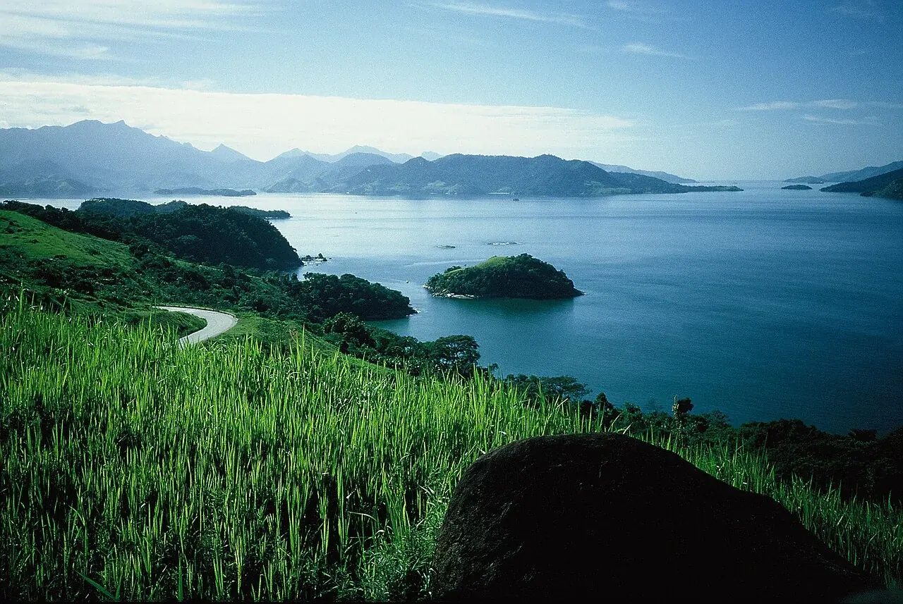

Ilha Grande
Rio de Janeiro, Brésil · kayak, snorkeling

Une île boisée au large d’Angra dos Reis, sur la côte de Rio de Janeiro. Les criques et les villages du littoral composent un itinéraire à préparer en bateau ou en kayak accompagné.
- Lieu
- Rio de Janeiro, Brésil
- Niveau
- Variable selon les conditions
- Activités
- kayak, snorkeling
- Type d'eau
- Mer / océan
- Coordonnées
- -23.14, -44.17 (position approximative du secteur)
Ouvrir dans Ocean Buddy Télécharger sur l'App Store
Source : Wikipédia · géographie du lieu.